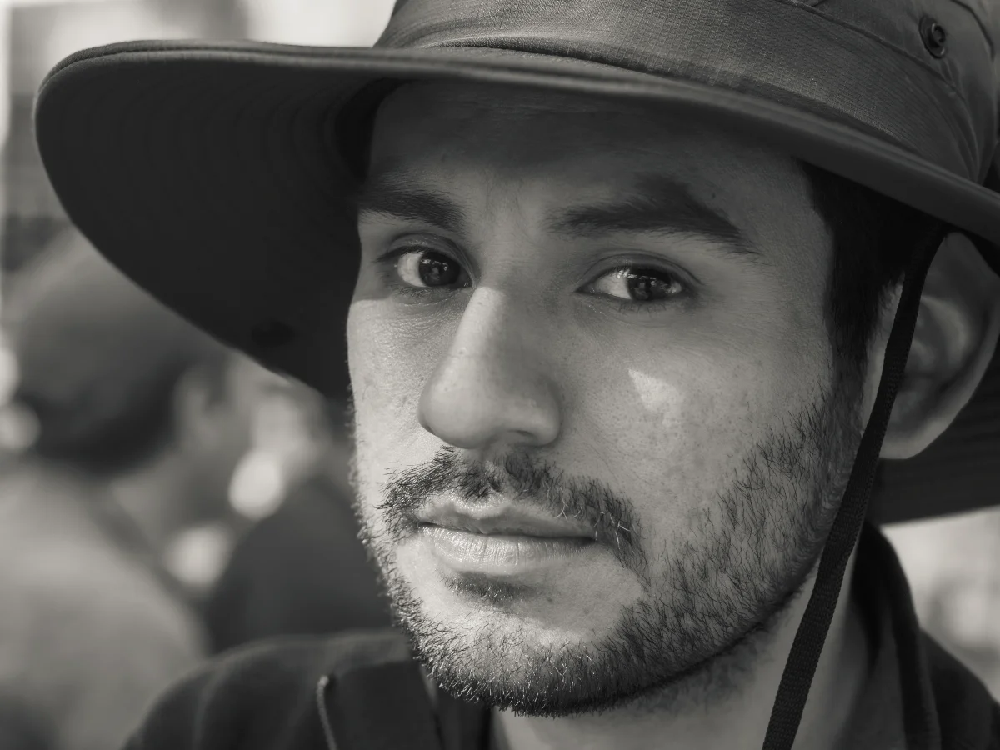

Kevin Puelles
Soy fotógrafo documental e investigador visual. Mi trabajo se centra en documentar la realidad social y las historias humanas con una mirada honesta y comprometida. Creo en la fotografía como un modo de estar: mirar con respeto, comprender con tiempo y narrar con transparencia.
Desde 2022, dirijo FotosDeLucha, una iniciativa autogestionada dedicada a registrar los procesos sociales y las expresiones populares en las distintas regiones del Perú. Mi enfoque busca ir más allá del registro, intentando establecer un diálogo entre la cámara y el entorno.
En paralelo, realizo coberturas fotográficas para instituciones y organizaciones, aplicando la misma sensibilidad documental a la fotografía de eventos, retratos y proyectos institucionales.